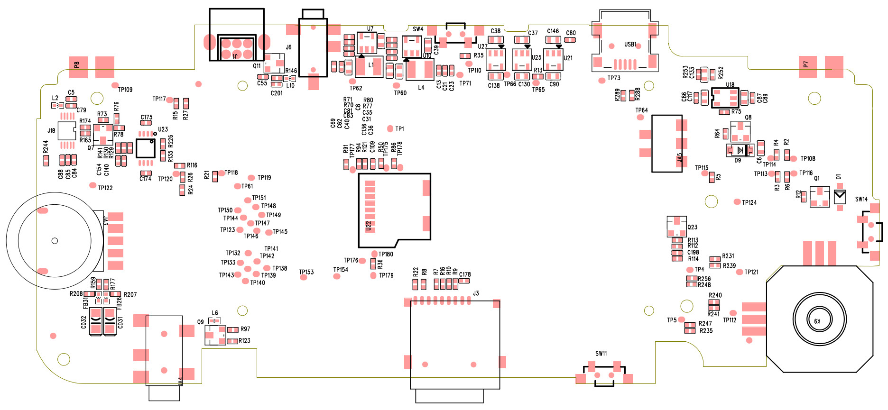

相當感謝小揚提供了這個PCB焊點圖，這個圖僅適用於RetroGame Plus(2週年紀念版)

| PAD | Description |
|---|---|
| TP122 | GND |
| TP109 | KEY_R |
| TP117 | KEY_X |
| TP120 | KEY_B |
| TP118 | KEY_Y |
| TP119 | KEY_A |
| TP61 | +3.3V |
| TP151 | LCD_DE |
| TP150 | LCD_RESET |
| TP148 | LCD_SDA |
| TP149 | LCD_PCLK |
| TP144 | LCD_CS |
| TP147 | LCD_SCL |
| TP123 | GND |
| TP146 | LCD_VSYN |
| TP145 | LCD_HSYNC |
| TP132 | LCD_G2 |
| TP133 | LCD_G3 |
| TP143 | LCD_B7 |
| TP141 | LCD_B5 |
| TP142 | LCD_B6 |
| TP140 | LCD_B4 |
| TP139 | LCD_B3 |
| TP138 | LCD_B2 |
| TP153 | VLED+ |
| TP154 | VLED- |
| TP176 | CS2_N |
| TP179 | FWE_N |
| TP180 | MSC0_CLK |
| TP62 | VDDPLL |
| TP60 | +1_8V |
| TP71 | BAT-V |
| TP110 | KEY_VOL+ |
| TP66 | VRTC12 |
| TP65 | VRTC18 |
| TP164 | VBUS |
| TP115 | KEY_RIGHT |
| TP114 | KEY_UP |
| TP108 | KEY_L |
| TP113 | KEY_DOWN |
| TP116 | KEY_LEFT |
| TP121 | BOOT_SEL1 |
| TP124 | GND |